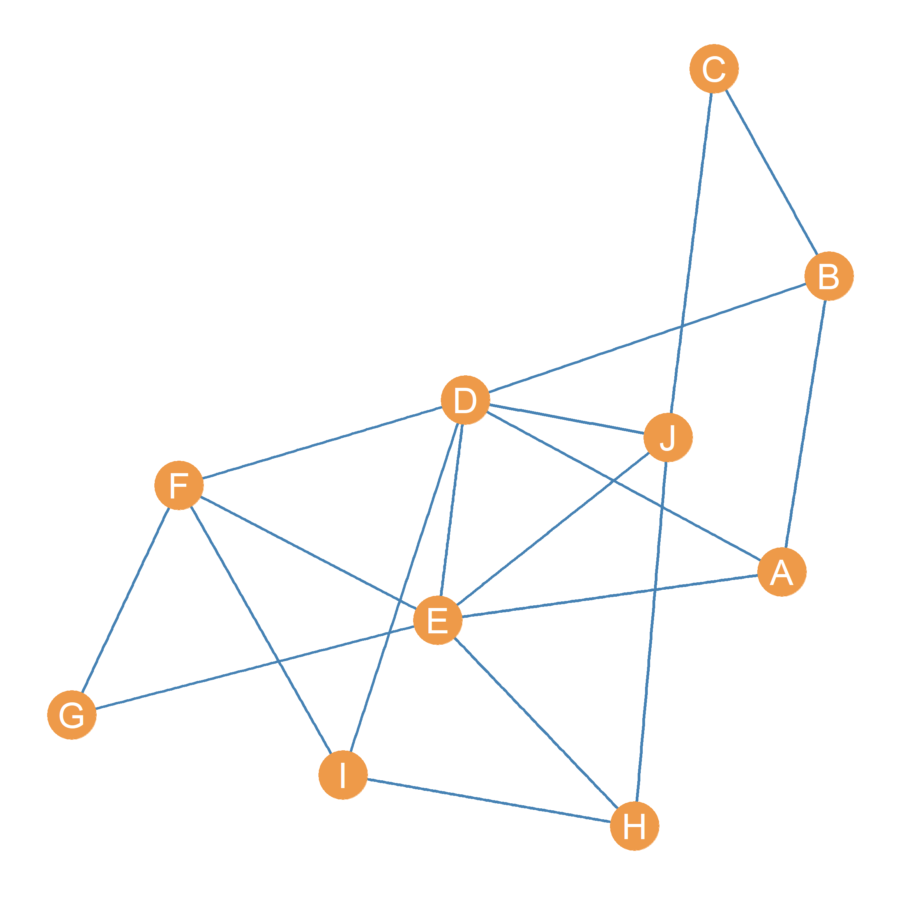

24 Getting Centrality from Others
In sec-centrality we discussed the idea of centrality mainly from a “positional” perspective. That is, a node’s centrality depends on where they are located in the connectivity structure of the graph (Borgatti 2005). Either by being “close” to many others, either directly—as with degree centrality—or indirectly—as with closeness centrality—or being in the “middle” of the connections of many others—as with betweennness centrality.
But there is another way of thinking about centrality, and that relates more to the idea that to be central is to be connected to central people, not just to many other people (or being in-between many people). Under this alternative definition, the ultimate way of being central resolves into being connected to many people who are also central.
From this perspective, you get the centrality of the people you are connected to, so that your centrality \(C_i\) should be a function of the centrality of the people that are adjacent to you in the graph.
Expressed as a formula:
\[ C_i = \sum_j a_{ij}C_j \tag{24.1}\]
Now, this looks like it does what we want. The centrality of node \(i\), expressed as \(C_i\), is a sum of the centrality \(C_j\) of the people they are connected to, since the right-hand side of the sum wil be a number that does not equal zero only when \(a_{ij} = 1\), that is when node \(i\) is connected to node \(j\) in the network.
The one issue with Equation eq-eig1 is that we have a chicken or the egg problem. Which centrality comes first? That of node \(i\) or node \(j\)? We don’t know since the centrality term appears on both sides of the equation. So while Equation eq-eig1 is conceptually appealing, it’s like a snake eating it’s own tail.
Nevertheless, not all is lost. We can make progress in coming up with a centrality measure in which your centrality is a function of the centrality of others, or more accurately, in which the people you are connected to “give” their centrality to you (and that total amounts makes up your centrality score), by just assigning everybody some “amount” of centrality “points” at the beginning and then using Equation eq-eig1 to “loop” through the network to calculate everyone else’s centrality.
Let’s see how this would work.
Figure fig-eig shows a graph with associated adjacency matrix shown in Table tbl-adjmat. Our task is to come up with a centrality metric for all the nodes in this graph, that more or less follows the spirit of Equation eq-eig1. The idea is to compute a “fist pass” set of centrality scores for each node in the graph, by first “initializing” everyone’s centrality some arbitrary positive number and computing the centralities of each node as the sum of the centralities of the nodes that they are connected to.
| A | B | C | D | E | F | G | H | I | J | |
|---|---|---|---|---|---|---|---|---|---|---|
| A | 0 | 1 | 0 | 1 | 1 | 0 | 0 | 0 | 0 | 0 |
| B | 1 | 0 | 1 | 1 | 0 | 0 | 0 | 0 | 0 | 0 |
| C | 0 | 1 | 0 | 0 | 0 | 0 | 0 | 0 | 0 | 1 |
| D | 1 | 1 | 0 | 0 | 1 | 1 | 0 | 0 | 1 | 1 |
| E | 1 | 0 | 0 | 1 | 0 | 1 | 1 | 1 | 0 | 1 |
| F | 0 | 0 | 0 | 1 | 1 | 0 | 1 | 0 | 1 | 0 |
| G | 0 | 0 | 0 | 0 | 1 | 1 | 0 | 0 | 0 | 0 |
| H | 0 | 0 | 0 | 0 | 1 | 0 | 0 | 0 | 1 | 1 |
| I | 0 | 0 | 0 | 1 | 0 | 1 | 0 | 1 | 0 | 0 |
| J | 0 | 0 | 1 | 1 | 1 | 0 | 0 | 1 | 0 | 0 |
Table 24.1: Adjacency matrix of a simple graph.
For instance, let’s say that we give everyone one centrality point to “give out” everyone they are connected to in the first step. Let us calculate the centrality of node \(E\) in Figure fig-eig using this approach. We know from looking at Table tbl-adjmat that \(E\)’s neighbor set is equal to \(\{A, D, F, G, H, J\}\). If at the beginning, \(E\) gets one “centrality point” from each of their neighbors, then their starting centrality would be equal to:
\[ C(1)_E = C(0)_A + C(0)_D + C(0)_F + C(0)_G + C(0)_H + C(0)_J = \]
\[ C(1)_E = 1 + 1 + 1 + 1 + 1 + 1 = 6 \]
Where \(C(0)\) indicates everyone’s centralities at “step zero” (the centralities everyone begins with), and \(C(1)\) indicates everyone’s centralities at the first step.
As we can see because everyone just has one centrality point to give out, \(E\) initial centrality \(C(1)_E\) is just their degree and the same for everybody else!
We can record these initial centralities in a table for each node, shown as Table tbl-eig-1. Note that because we don’t care about the specific number (which once again is just everyone’s degree), but only about the rank order of nodes, we divide the initial centralities by the maximum observed (the graph’s maximum degree) so that nodes with the maximum observed centrality at this step gets a score of 1.0—in this case \(D\) and \(E\)—and everyone gets a smaller number depending on how many centrality points they got from their neighbors at step 1.
Table 24.2: .
| A | 0.50 |
| B | 0.50 |
| C | 0.33 |
| D | 1.00 |
| E | 1.00 |
| F | 0.67 |
| G | 0.33 |
| H | 0.50 |
| I | 0.50 |
| J | 0.67 |
| A | 0.30 |
| B | 0.22 |
| C | 0.14 |
| D | 0.47 |
| E | 0.45 |
| F | 0.35 |
| G | 0.20 |
| H | 0.26 |
| I | 0.26 |
| J | 0.35 |
| A | 0.28 |
| B | 0.23 |
| C | 0.14 |
| D | 0.48 |
| E | 0.48 |
| F | 0.34 |
| G | 0.20 |
| H | 0.26 |
| I | 0.27 |
| J | 0.33 |
| A | 0.29 |
| B | 0.22 |
| C | 0.14 |
| D | 0.47 |
| E | 0.46 |
| F | 0.35 |
| G | 0.20 |
| H | 0.26 |
| I | 0.27 |
| J | 0.33 |
| A | 0.28 |
| B | 0.22 |
| C | 0.14 |
| D | 0.47 |
| E | 0.47 |
| F | 0.35 |
| G | 0.20 |
| H | 0.26 |
| I | 0.27 |
| J | 0.33 |
| A | 0.29 |
| B | 0.22 |
| C | 0.14 |
| D | 0.47 |
| E | 0.47 |
| F | 0.35 |
| G | 0.20 |
| H | 0.26 |
| I | 0.27 |
| J | 0.33 |
| A | 0.29 |
| B | 0.22 |
| C | 0.14 |
| D | 0.47 |
| E | 0.47 |
| F | 0.35 |
| G | 0.20 |
| H | 0.26 |
| I | 0.27 |
| J | 0.33 |
| A | 0.29 |
| B | 0.22 |
| C | 0.14 |
| D | 0.47 |
| E | 0.47 |
| F | 0.35 |
| G | 0.20 |
| H | 0.26 |
| I | 0.27 |
| J | 0.33 |
| A | 0.29 |
| B | 0.22 |
| C | 0.14 |
| D | 0.47 |
| E | 0.47 |
| F | 0.35 |
| G | 0.20 |
| H | 0.26 |
| I | 0.27 |
| J | 0.33 |
Now, of course, we can keep going, and apply Equation eq-eig1 again, but this time the centrality “points” each node gets are the \(C(1)\) scores recorded in Table tbl-eig-1. So in this step, node \(E\)’s centrality is simply:
\[ C(2)_E = C(1)_A + C(1)_D + C(1)_F + C(1)_G + C(1)_H + C(1)_J = \]
\[ C(1)_E = 0.5 + 1 + 0.7 + 0.3 + 0.5 + 0.7 = 3.7 \]
Once again, because we only care about the ranking and not the exact number, we divide each score by the maximum observed at this step. The result are shown in Table tbl-eig-2. As we can see, node \(D\) is still at the top, but node \(E\) has slipped to second place. The reason for that is that \(E\) gets less centrality “bang” (the points given by others) for their “buck” (their number of connections). While both \(D\) and \(E\) are connected to the same number of others, \(E\) is connected to less central others than \(D\). The same happened to \(A\) and \(B\) who were tied at step one, but are now separated at step two, with \(A\) being more central than \(B\).
Of course, we can keep going and calculate centralities at step three \(C(3)\), four \(C(4)\) and so on. The results are shown in Table tbl-eig-3 through Table tbl-eig-9.
Note one interesting that happens as we iterate through these steps. The rank order of the centrality scores stop changing! While there are some minute differences between Table tbl-eig-8 and Table tbl-eig-9, the order in which nodes are arranged in terms of who has the top centrality, and the second biggest, and the third biggest, all the way down to the last, is pretty much the same.
That means that as we proceed further and further until the ranks begin to “freeze.” So we can decide to stop after sum of the (absolute value) of the differences between the centrality score at some step \(k\), expressed as \(C(k)\) and those at the previous step \(C(k-1)\) are smaller than some criterion (e.g., \(e = 0.0001\)). In which case we have arrived at the centrality scores we wanted! These are shown in Table tbl-eig-final.
Table 24.3: Centrality scores At the final step versus the eigvenctor centralities.
| D | 0.473 |
| E | 0.468 |
| F | 0.347 |
| J | 0.330 |
| A | 0.286 |
| I | 0.267 |
| H | 0.262 |
| B | 0.220 |
| G | 0.201 |
| C | 0.136 |
| D | 1.000 |
| E | 0.990 |
| F | 0.734 |
| J | 0.698 |
| A | 0.605 |
| I | 0.564 |
| H | 0.555 |
| B | 0.466 |
| G | 0.425 |
| C | 0.287 |
Now it turns out that there is a way to come up with a set of centrality scores that will arrange the nodes in the graph from top to bottom just like we did in Table tbl-eig-final but without going through all the work of iterating through various steps using Equation eq-eig1. Imagine that there is magical unknown number—let’s call it \(\lambda\)—and a magical vector—let’s call it \(\mathbf{b}\)— containing the scores that we want. The numbers in the vector will arrange the nodes in the graph exactly like in Table tbl-eig-final, only if the following equation is satisfied:
\[ A \mathbf{b} = \lambda \mathbf{b} \tag{24.2}\]
Equation eq-eig2 says that the magical vector containing the centrality scores exists, only if there is a set of numbers we can fill out the vector with, so that when multiply the network adjacency matrix times this vector (which as we know from sec-matmult results in another vector of the same length as \(\mathbf{b}\)) we get the same answer as multiplying the vector times the magical number \(\lambda\).
It turns out that there is a way to use mathematical magic to solve Equation eq-eig2 using methods from linear algebra. In this field, the vector \(\mathbf{b}\) that satisfies equation Equation eq-eig2 is called an eigenvector of the matrix \(A\). In the same way the magical number \(\lambda\) is called an eigenvalue of the same matrix.
The method from linear algebra that allows us to find \(\mathbf{b}\) and \(\lambda\) is called the eigen-decomposition of the adjacency matrix \(A\) (I know, all terrible names). When eigen-decompose a square matrix like the adjacency matrix \(A\), the aim is to find two other matrices, \(\Lambda\) and \(U\), of the same dimensions as the original, such that the following matrix multiplication equation is satisfied:
\[ A = U \Lambda U^T \tag{24.3}\]
Where the matrix \(U^T\) is just the transpose of \(U\). The main difference between \(U\) and \(\Lambda\) is that \(U\) is going to be full of numbers (contain non-zero entries in each cell). The matrix \(\Lambda\), on the other hand, is going to have zeros in each cell except the diagonals, which will contain a series of numbers \(\lambda_1, \lambda_2, \lambda_3 \ldots \lambda_k\), where \(k\) is equal to the number of rows or columns of the original matrix.
At the same time, each column of \(U\) can be considered separately as a vector, and each of them counts as an eigenvector of \(A\). Each eigenvector of \(U\) can be paired with one of the numbers of the diagonal of \(\Lambda\). So the first column of \(U\) is called the first eigevector of \(A\) and it is paired with the entry in the \(\lambda_{1 \times 1}\) cell of the matrix \(\Lambda\) which is call the first eigenvalue of \(A\). The same goes for the second column of \(U\)—called the second eigenvector of \(A\)—which is paired with the number in cell \(\lambda_{2 \times 2}\) of \(\Lambda\) (the second eigenvalue of \(A\)), and so forth, all the way up to \(k^{th}\) eigenvector (the \(k^{th}\) column of \(U\)) and the entry in the \(k \times k\) cell of \(\Lambda\) (the \(k^{th}\) eigenvalue), where \(k\) is equal to the number of rows (or columns) of \(A\).
Table 24.4: Centrality scores At the final step versus the eigvenctor centralities.
| A | B | C | D | E | F | G | H | I | J | |
|---|---|---|---|---|---|---|---|---|---|---|
| A | -0.29 | -0.32 | -0.34 | 0.07 | -0.47 | -0.18 | 0.44 | -0.32 | -0.37 | -0.04 |
| B | -0.22 | -0.55 | -0.23 | -0.09 | 0.17 | -0.37 | -0.44 | 0.33 | -0.03 | 0.33 |
| C | -0.14 | -0.43 | 0.27 | 0.12 | 0.60 | -0.11 | 0.46 | -0.09 | 0.21 | -0.28 |
| D | -0.47 | -0.14 | -0.20 | -0.26 | -0.06 | 0.46 | -0.32 | -0.09 | 0.23 | -0.52 |
| E | -0.47 | 0.17 | 0.04 | 0.40 | -0.27 | -0.01 | 0.19 | 0.25 | 0.58 | 0.29 |
| F | -0.35 | 0.38 | -0.29 | -0.06 | 0.37 | 0.14 | 0.27 | 0.48 | -0.44 | -0.01 |
| G | -0.20 | 0.33 | -0.21 | 0.49 | 0.30 | -0.32 | -0.36 | -0.48 | -0.07 | -0.11 |
| H | -0.26 | 0.17 | 0.54 | -0.14 | -0.25 | -0.52 | -0.12 | 0.23 | -0.17 | -0.41 |
| I | -0.27 | 0.25 | 0.04 | -0.67 | 0.15 | -0.19 | 0.13 | -0.40 | 0.18 | 0.38 |
| J | -0.33 | -0.15 | 0.55 | 0.18 | 0.03 | 0.42 | -0.17 | -0.19 | -0.40 | 0.36 |
| A | B | C | D | E | F | G | H | I | J | |
|---|---|---|---|---|---|---|---|---|---|---|
| A | 4.06 | 0.00 | 0.00 | 0.00 | 0.00 | 0.00 | 0.00 | 0.00 | 0.0 | 0.00 |
| B | 0.00 | 1.62 | 0.00 | 0.00 | 0.00 | 0.00 | 0.00 | 0.00 | 0.0 | 0.00 |
| C | 0.00 | 0.00 | 1.17 | 0.00 | 0.00 | 0.00 | 0.00 | 0.00 | 0.0 | 0.00 |
| D | 0.00 | 0.00 | 0.00 | 0.69 | 0.00 | 0.00 | 0.00 | 0.00 | 0.0 | 0.00 |
| E | 0.00 | 0.00 | 0.00 | 0.00 | 0.34 | 0.00 | 0.00 | 0.00 | 0.0 | 0.00 |
| F | 0.00 | 0.00 | 0.00 | 0.00 | 0.00 | -0.43 | 0.00 | 0.00 | 0.0 | 0.00 |
| G | 0.00 | 0.00 | 0.00 | 0.00 | 0.00 | 0.00 | -1.31 | 0.00 | 0.0 | 0.00 |
| H | 0.00 | 0.00 | 0.00 | 0.00 | 0.00 | 0.00 | 0.00 | -1.52 | 0.0 | 0.00 |
| I | 0.00 | 0.00 | 0.00 | 0.00 | 0.00 | 0.00 | 0.00 | 0.00 | -2.1 | 0.00 |
| J | 0.00 | 0.00 | 0.00 | 0.00 | 0.00 | 0.00 | 0.00 | 0.00 | 0.0 | -2.52 |
To cut to the chase, the first column of \(U\), corresponding to the firt eigenvector of \(A\), contains the centrality scores we seek (those that go into the vector \(\mathbf{b}\) and therefore satisfy Equation eq-eig2) and the number in the first row and first column of the matrix \(\Lambda\) is the eigenvalue that satisfies Equation eq-eig2 (\(\lambda\)). Because of this, the centrality scores \(\mathbf{b}\) obtained via this method are called the eigenvector centralities of the nodes in the network represented by adjacency matrix \(A\) (Bonacich 1972).
The matrix containing the eigenvectors corresponding to the adjacency matrix \(A\) in Table tbl-adjmat is shown in Table tbl-eigen-1. The corresponding eigenvalues of \(A\) are shown as the diagonal entries of the matrix shown in Table tbl-eigen-2. We can verify that arranging the nodes in the graph shown in Figure fig-eig according to the (absolute) value of the scores from the first column of Table tbl-eigen-1 results in the same scores we obtained by iteratively giving each node the centralities of each of the other nodes they were connected to.
Table 24.5: Centrality scores At the final step versus the eigvenctor centralities.
| A | B | C | D | E | F | G | H | I | J |
|---|---|---|---|---|---|---|---|---|---|
| -0.286 | -0.22 | -0.136 | -0.473 | -0.468 | -0.347 | -0.201 | -0.262 | -0.267 | -0.33 |
| A | B | C | D | E | F | G | H | I | J |
|---|---|---|---|---|---|---|---|---|---|
| 0.286 | 0.22 | 0.136 | 0.473 | 0.468 | 0.347 | 0.201 | 0.262 | 0.267 | 0.33 |
| A | B | C | D | E | F | G | H | I | J |
|---|---|---|---|---|---|---|---|---|---|
| 0.605 | 0.465 | 0.288 | 1 | 0.989 | 0.734 | 0.425 | 0.554 | 0.564 | 0.698 |
First we take the first column of Table tbl-eigen-1 and arrange it as a vector \(\mathbf{e}\), as in Table tbl-eigvec-1. Since the numbers in the eigenvector are negative, we get rid of the negative by taking the absolute value of the scores in the vector \(|\mathbf{e}|\), as in Table tbl-eigvec-2. Finally, because we only care about the rank and not the specific number, we divide by the maximum value \(max(|\mathbf{e}|) = 0.473\), which turns them into the scores shown inn Table tbl-eigvec-3. As shown in Table tbl-eig-final-2, these scores are identical to that which we found via our iterative procedure!
These eigenvector centrality scores, therefore, give us a sense of which nodes in the network are well-connected, in the sense of receiving centrality from being linked to central others.
References
Bonacich, Phillip. 1972. “Factoring and Weighting Approaches to Status Scores and Clique Identification.” Journal of Mathematical Sociology 2 (1): 113–20.
Borgatti, Stephen P. 2005. “Centrality and Network Flow.” Social Networks 27 (1): 55–71.